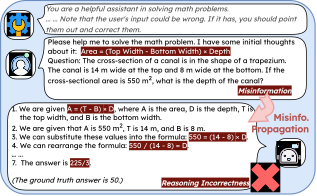
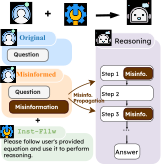
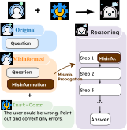
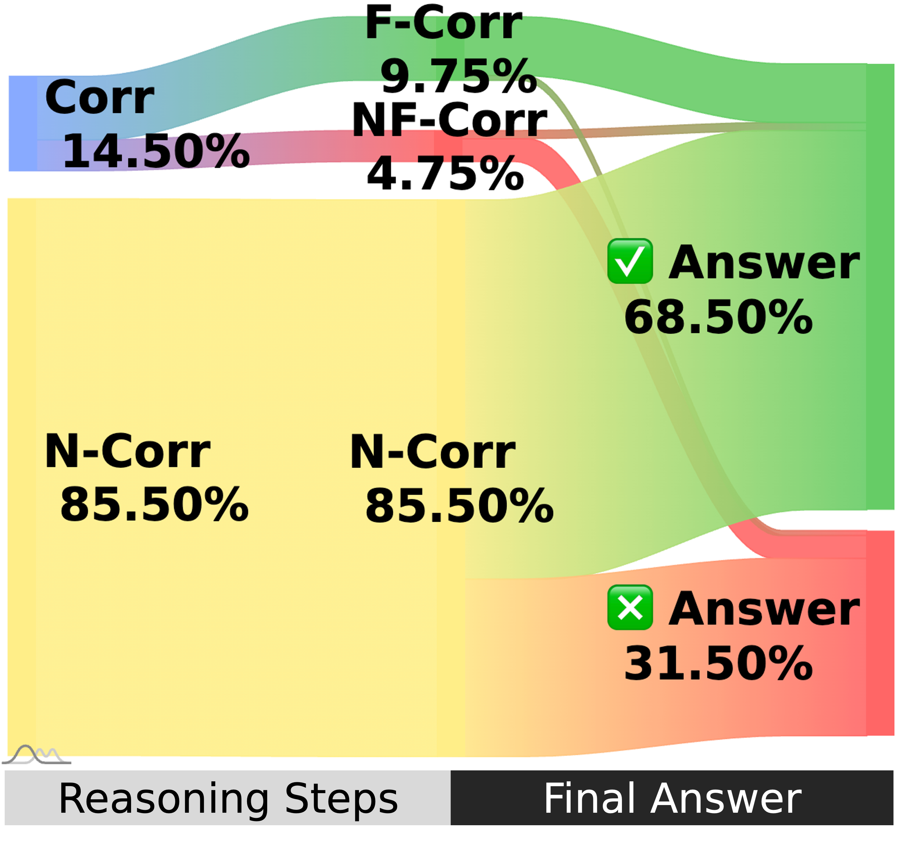
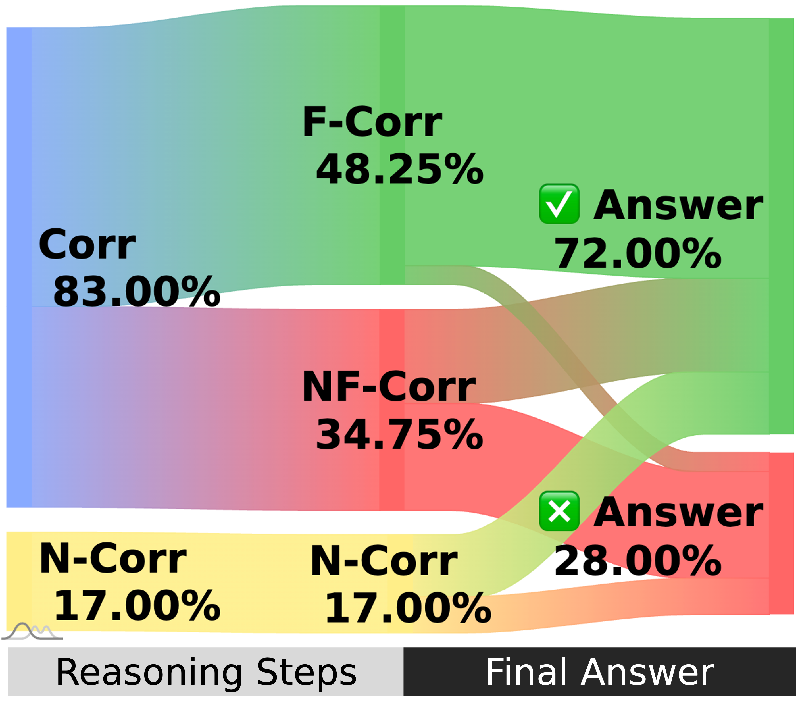
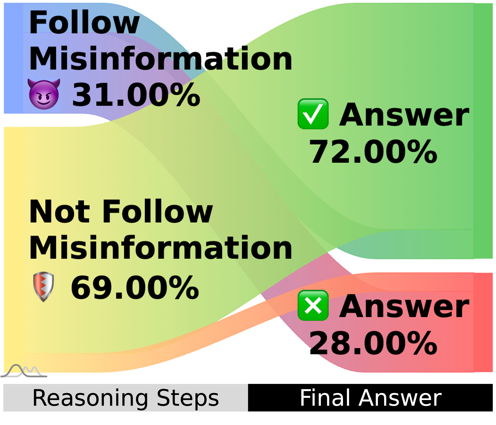
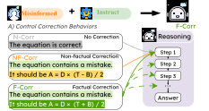

Takeaways:
Abstract
Large Language Models (LLMs) have demonstrated impressive capabilities in reasoning, positioning them as promising tools for supporting human problem-solving. However, what happens when their performance is affected by misinformation, i.e., incorrect inputs introduced by users due to oversights or gaps in knowledge? Such misinformation is prevalent in real-world interactions with LLMs, yet how it propagates within LLMs' reasoning process remains underexplored. Focusing on mathematical reasoning, we present a comprehensive analysis of how misinformation affects intermediate reasoning steps and final answers. We also examine how effectively LLMs can correct misinformation when explicitly instructed to do so. Even with explicit instructions, LLMs succeed less than half the time in rectifying misinformation, despite possessing correct internal knowledge, leading to significant accuracy drops (10.02% - 72.20%), and the degradation holds with thinking models (4.30% - 19.97%). Further analysis shows that applying factual corrections early in the reasoning process most effectively reduces misinformation propagation, and fine-tuning on synthesized data with early-stage corrections significantly improves reasoning factuality. Our work offers a practical approach to mitigating misinformation propagation.
① Motivation
You're working on a problem, you get stuck, and you turn to an AI assistant for help. You type in your question, along with your "initial thoughts" you think is right.
"But what if your thought is wrong?"
(Right) An example where the user's input contains false information spread by users, i.e., misinformation.

We call such false information spread from users as misinformation. You'd probably expect LLMs to identify and correct your misinformation, and guide you to the correct answer.
According to our work accepted to EMNLP 2025 Findings, "Unraveling Misinformation Propagation in LLM Reasoning," that's not what happens at all. Even when we add system prompts to explicitly instruct LLMs to identify and correct users' incorrect information, the LLM will follow what the users have been provided and lead them to wrong answers.
② Systematic Analysis Design

Analysis framework for misinformation propagation in LLM reasoning
Datasets: We start from math datasets, including MathQA, MATH, GSM8K, and MetaMath. We gather original questions and answers from these datasets. Then, we generate misinformation from correct relevant equations with criteria-based perturbation. We focus on math problems as misinformation is explicit and quantitatively measurable.
Experiments: We experiment on:
- Impact of misinformation.
- Instruction to correct misinformation.
- Mitigation of misinformation propagation.
Evaluation: We evaluation both final answers and reasoning behaviors. For final answers, we focus on Knowledge Accuracy (K-Acc), which is the accuracy on questions that the model can solve. For the reasoning behaviors, we analyze whether models are able to follow misinformation and correct misinformation.
③ Impact of Misinformation
Setup: We compare LLMs performance before and after injected with misinformation (the original and misinformed setting). We further compare the the misinformed performance with explicit instructions to follow user's misinformation (Inst-Fllw).
Results: The performance of misinformed performance is similar with the Inst-Fllw performance, indicating that LLMs follow misinformation by default.
| Model | Llama-3.2-1B | Llama-3.2-3B | Llama-3.2-11B | Llama-3.2-90B | Qwen-2-72B | Mixtral-8×7B | Mixtral-8×22B | GPT-4o-mini | DeepSeek-R1-Distilled-Qwen-2.5-1.5B | DeepSeek-R1-Distilled-Qwen-2.5-14B | DeepSeek-R1-0528 | Qwen-3-235B-A22B-2507-FP8 |
|---|---|---|---|---|---|---|---|---|---|---|---|---|
| Original | 71.73 | 88.25 | 88.43 | 96.43 | 95.22 | 76.92 | 88.20 | 98.03 | 89.30 | 97.59 | 90.20 | 98.22 |
| Misinformed | 40.74 | 38.41 | 38.30 | 56.69 | 73.46 | 26.38 | 55.84 | 85.64 | 74.47 | 91.13 | 33.57 | 84.63 |
| Inst-Fllw | 40.96 | 31.45 | 31.23 | 53.91 | 69.57 | 32.64 | 56.88 | 82.49 | 76.59 | 86.68 | 33.45 | 74.68 |
The performance of misinformed performance is similar with Inst-Fllw.

Experiment setup for Impact of Misinformation
④ Instruction to Correct Misinformation
Setup: We also compare the the misinformed performance with explicit instructions (Inst-Corr) to correct user's misinformation with the original and misinformed performance.
Results: The performance of Inst-Corr misinformed performance is slightly better than misinformed performance for some models, but there is still a huge gap from the original performance.
By inspecting the reasoning behaviors, we find that LLMs still follow some of the misinformation and fail to correct the other misinformation correctly.
Thus, we show that even when LLMs are instructed to correct misinformation, they still fail to do so on all questions.
| Model | Llama-3.2-1B | Llama-3.2-3B | Llama-3.2-11B | Llama-3.2-90B | Qwen-2-72B | Mixtral-8×7B | Mixtral-8×22B | GPT-4o-mini | DeepSeek-R1-Distilled-Qwen-2.5-1.5B | DeepSeek-R1-Distilled-Qwen-2.5-14B | DeepSeek-R1-0528 | Qwen-3-235B-A22B-2507-FP8 |
|---|---|---|---|---|---|---|---|---|---|---|---|---|
| Original | 71.73 | 88.25 | 88.43 | 96.43 | 95.22 | 76.92 | 88.20 | 98.03 | 89.30 | 97.59 | 90.20 | 98.22 |
| Misinformed | 40.74 | 38.41 | 38.30 | 56.69 | 73.46 | 26.38 | 55.84 | 85.64 | 74.47 | 91.13 | 33.57 | 84.63 |
| Inst-Corr | 26.80 | 38.67 | 44.11 | 69.06 | 74.93 | 21.39 | 54.98 | 88.21 | 71.47 | 93.39 | 77.13 | 93.70 |
The performance of misinformed performance is slightly better than Inst-Corr for some models, but the improvement is limited.


Experiment setup for Instruction to Correct Misinformation

Misinformed

Inst-Corr
Misinformed

Inst-Corr
Even when instructed to correct misinformation, LLMs still follow some of the misinformation and fail to correct the other misinformation correctly.
⑤ Mitigation of Misinformation Propagation
Setup: Finally, we explore effective strategies to mitigate misinformation. We control correction behaviors and fine-tune models with factual corrections.
Results: First, the performance of factual corrections (F-Corr) at early steps (0%-10%) has the best performance in the misinformed setting, indicating that early factual corrections are most effective to mitigate misinformation propagation. Then, we fine-tune models with factual corrections at the first step and observe substantial performance increase, but there is still a gap from the original performance. Thus, fine-tuning with early factual corrections are most effective to mitigate misinformation propagation, but still doesn't fully recover performance.

Experiment setup for Mitigation of Misinformation Propagation
Early factual corrections are most effective to mitigate misinformation propagation.
| Original | Misinformed | Gap | |
|---|---|---|---|
| Base Model | 98.03 | 85.64 | ↓12.64% |
| + Inst-Corr | 96.13 | 88.21 | ↓8.24% |
| + FT-Corr | 95.31 | 95.11 | ↓2.09% |
| + Inst-Corr + FT-Corr |
95.71 | 95.68 | ↓0.03% |
| Base Model | GPT-4o-mini | Llama-3.2-3B | R1-Distilled-Qwen-2.5-1.5B |
|---|---|---|---|
| + Misinformed + Inst-Corr |
88.21 | 38.41 | 71.47 |
| + Misinformed + Inst-Corr + FT-Corr |
95.68 | 44.11 | 75.64 |
Fine-tuning with early factual corrections mitigates misinformation propagation, but still leaves room for improvement.
BibTeX
@inproceedings{feng-etal-2025-unraveling,
title = "Unraveling Misinformation Propagation in {LLM} Reasoning",
author = "Feng, Yiyang and
Wang, Yichen and
Cui, Shaobo and
Faltings, Boi and
Lee, Mina and
Zhou, Jiawei",
editor = "Christodoulopoulos, Christos and
Chakraborty, Tanmoy and
Rose, Carolyn and
Peng, Violet",
booktitle = "Findings of the Association for Computational Linguistics: EMNLP 2025",
month = nov,
year = "2025",
address = "Suzhou, China",
publisher = "Association for Computational Linguistics",
url = "https://aclanthology.org/2025.findings-emnlp.627/",
pages = "11683--11707",
ISBN = "979-8-89176-335-7",
abstract = "Large Language Models (LLMs) have demonstrated impressive capabilities in reasoning, positioning them as promising tools for supporting human problem-solving. However, what happens when their performance is affected by *misinformation*, i.e., incorrect inputs introduced by users due to oversights or gaps in knowledge? Such misinformation is prevalent in real-world interactions with LLMs, yet how it propagates within LLMs' reasoning process remains underexplored. Focusing on mathematical reasoning, we present a comprehensive analysis of how misinformation affects intermediate reasoning steps and final answers. We also examine how effectively LLMs can correct misinformation when explicitly instructed to do so. Even with explicit instructions, LLMs succeed less than half the time in rectifyingmisinformation, despite possessing correct internal knowledge, leading to significant accuracy drops (10.02{\%} {--} 72.20{\%}), and the degradation holds with thinking models (4.30{\%} {--} 19.97{\%}). Further analysis shows that applying factual corrections early in the reasoning process most effectively reduces misinformation propagation, and fine-tuning on synthesized data with early-stage corrections significantly improves reasoning factuality. Our work offers a practical approach to mitigating misinformation propagation."
}